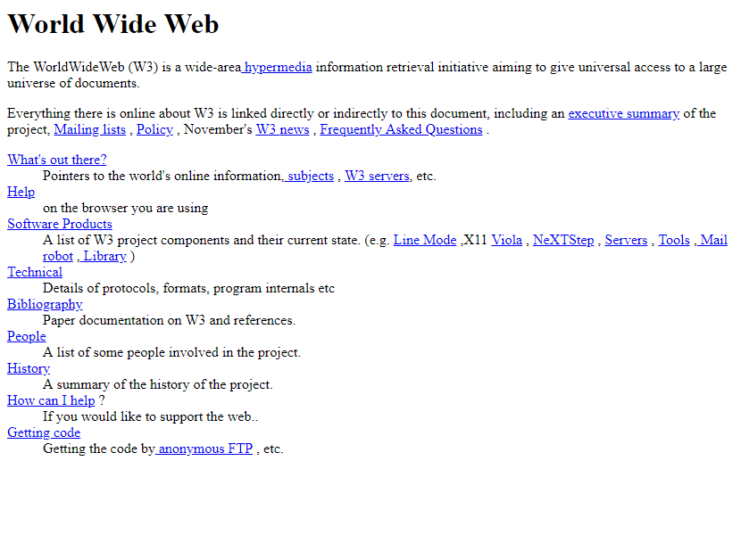
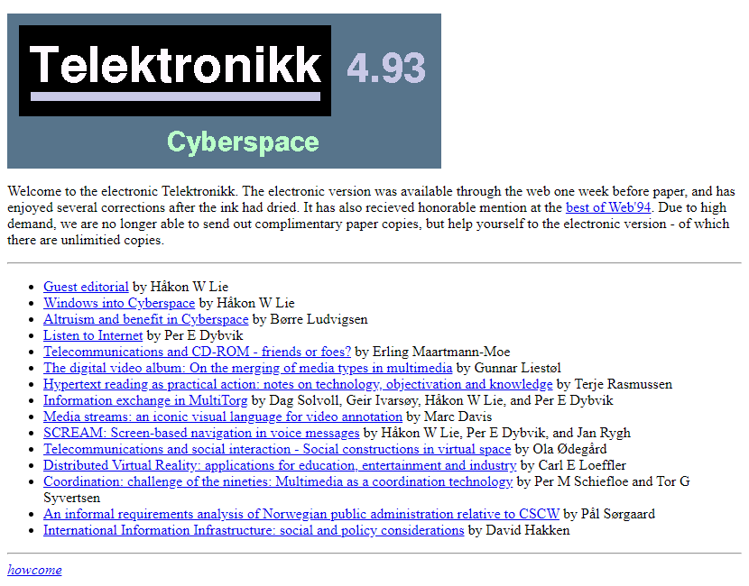

What Is HTML?
Home > What Is HTML? (you are here)
‘Welcome to the world wide web’
In its simplest terms, HTML (hypertext markup language) was a coding language dedicated to organising specific information to be displayed on a web browser. While the 1st publically published version appeared in 1993, it technically existed long before that in the late 1980's. This language would contribute to the rapid expansion of the internet in the late 1990's/early 2000's.
The first form of HTML was incredibly simple. The internet at this time was treated far more as a utilitarian tool rather than what it is today. Because of this, there is little design variation as there was largely no need. It was not until later when designers started taking websites more seriously and treated web design as its own form of design.
Websites at this time would have been displayed through a web browser like today. The main web browser at the time would have been worldwide web browser, created by Tim Berners-Lee, and later on, Mosaic, which was the first graphical web browser. These browsers would display HTML documents as they were intended to be displayed. later on, web browses that could display images and other media would be created, such as Netscape Navigator and Internet Explorer.
HTML 1.0:
Document structure
<HEAD> contains metadata about the document
<HTML> the root element of an HTML document
<BODY> the main content of the document
<TITLE> the title of the document (displayed in the browser's title bar)
These are mandatory tags for any HTML document. All of these are still used today.
Text formatting
<B> bold
<I> italic
<U> underline
<EM> emphasis (normally rendered as italic)
<STRONG> Strong (normally rendered as bold)
<P> paragraph (used to separate blocks of text)
<CITE> citation
<CODE> Inline code snippet
<KBD> keyboard input (monospace font)
<SAMP> Sample output (monospace font)
<DFN> Definition of a term (usually italic)
<VAR> Variable name in math or programming (usually italic)
<TT> teletype text (monospace font) (obsolete now)
Lists: tags for ordered and unordered lists
<UL> unordered list
<OL> ordered list
<LI> List item (in UL or OL)
<DL> definition list
<DT> definition term (in DL)
<DD> definition description (in DL)
<DIR> directory list (obsolete now)
<MENU> menu list (obsolete now)
headings: the higher the number, the smaller the heading
<H1> <H2> <H3> <H4> <H5> <H6>
links and navigation
<A> anchor (creates hyperlinks)
<BASE> base URL for relative links
<LINK> link to external resources (like stylesheets)
<NEXTID> next document ID in a series (obsolete now)
Images and metadata
<BLOCKQUOTE> block quotation
<IMG> displays an image
<ISINDEX> input for a single-line search query (obsolete now)
<ADDRESS> contact information for the author of the document
<PRE> preformatted text (preserves whitespace and line breaks)
<PLAINTEXT> plain text (displays text as-is, without HTML formatting)
<LISTING> preformatted text (same as pre but in slightly different style) (obsolete now)
<XMP> eXternal Markup Processing (displays raw text) (obsolete now)
<KEY> keyboard input (obsolete now)
The above tags were the only way to customise a website in the early 1990's. Because of this, almost all websites have the same look.
Below are some images of example websites. Note that there is no image resizing option at this time!

